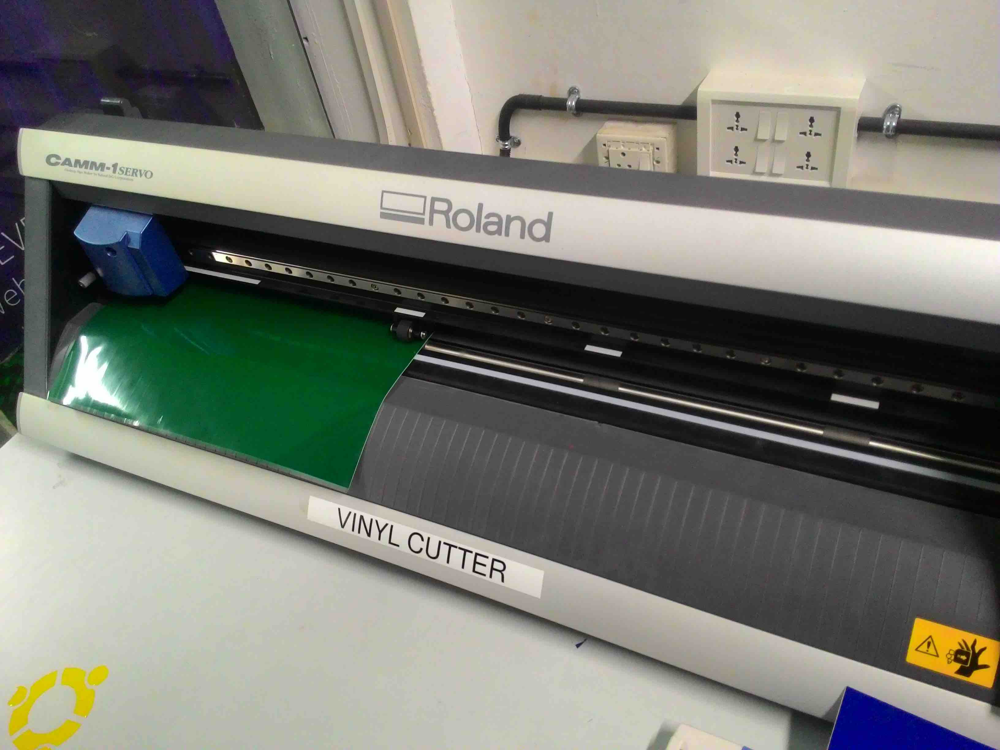

| Home | | Week 1 | | Week 2 | | Week 3 | | Week 4 |
This week has been one of the best weeks in my entire life as my wife and I were blessed with a beautiful baby girl on October 26th. As my wife was due for delivery I was not available for training in this week. However, I have made use of the remaining week to catch up most of the things I missed. This page is the documenation of that.
Week 2
1. Vinyl Cutter: Introduction
2. Assignment: Using vinyl cutter
3. Set up Prefab documenation website on Github
1. Vinyl Cutter: Introduction
Vinyl cutter is a very versatile device which can be used for a plethora of applications other than just sticker cutting such making flexible circuits, making screen printing boards etc
Our Fablab is equiped with a Roland CAMM-1 Servo vinyl cutter, a few rolls of vinyl sheets, few screen printing boards, screen printing ink etc. In pre fab workshop, Luciano tought us how design and cut sheets using Vinyl cutter and Fab Module.
Any png image desinged in any designing software like GIMP, Illustrator etc. can be fed to vinyl cutter via fab module. The input file should be a dual tone image in png format.
Loading sheets on vinyl cutter
I loaded a piece of vinyl sheet by pulling up the lever on the rear side of the vinyl cutter. This loosens the hold and vinyl sheets or peices of vinyl sheets was slided in and loaded.
Changing blade

Vinyl cutter bit/blade can be replaced unscreweing the bit with hand. I replaced the existing blade with a new Roland 45 degree vinyl cutter blad blade.
Positioning rollers
I made sure that the visible rollers on the front side are kept over the vinyl sheet and also double checked if its positioned on the white markings on the vinyl cutter.
Setting up Origin
As I was using a vinyl sticker piece, I selected the peice option. The vinyl cutter will measure the lenght and width of the peice by rolling in and out. Once its done. Orgin can be set by moving the head with the arrow keys and you are all set to go.
2. Assignment: Using Vinyl Cutter
Assignment was to create something with the Roland Vinyl cutter and I wanted to make something intersting. Its been only a few days since my baby girl was born and going forward. I wanted to stick a "baby on board" sticker on the rear glass of my car so that whenever I am driving too slow, the vehicles following me will understand why I am driving slowly.
For this assignment I am making a two layer vinyl sticker. The base layer is Yellow and the top layer is green.
Designing the sticker
I used GIMP to design a simple baby on board sticker. I made sure that I have used only two colours black and white and saved the file in png format. As mentioned above, I am using yellow and green vinyl sticker sheets to get my job done.
Fab Module
This time I used the web version of Fab Module. I opened browser on Ubuntu on our FabLab computer connected with Vinyl cutter and typed the following address in the address bar

Selected the input as 'png' and output as 'Roland Vinyl'(.camm) and click on load png. Once that was done, I used the resize option to resize the sticker to height 15 cm and width 15 cm.
http://fabmodules.org/
After resizing, I clicked on make path. This will show the path in which the blade will move while cutting the sticker and gives an idea how the job is going to be done. After that i cliked on make .cammm so that the vinyl cutter format for the resized image is generated.

Then I loaded green vinyl sticker sheet in the vinyl cutter and setup the machine. The setup instructions are available in this same page in my previous post. Once it was done, I clicked on "Send it". The machine cut the sticker precisely and it worked like a charm.
I removed the unwanted parts of the sticker using a stationary knife and used the masking tape to take the needed parts and sticked it on the surface of yellow vinyl sticker sheet!
My sticker is ready and it looks amazing.
The final step was to cut the edges out. Once its done I used two sided tapes to stick it on rear glass of my car.